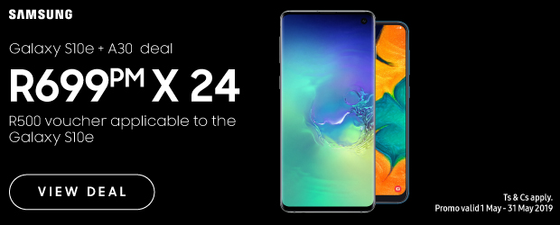
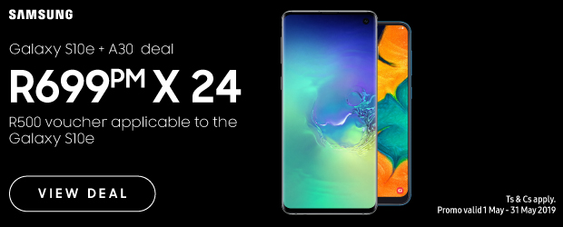

MTN
The company was founded in 1994 as M-Cell with assistance from the South African government.[6] In 1995, it replaced its then-CEO, John Beck, with Robert (Bob) Chaphe.[7] In 2001, the company reported that its controlling shareholder was Johnnic Holdings, and the chairperson was Irene Charnley.[8] In 2002, Phuthuma Nhleko became the CEO,[9] replacing then-CEO Paul Edwards, who had invested in expansion to Nigeria.[10] MTN's competitors in South Africa include Vodacom, Cell C and Telkom Mobile. In May 2008, Bharti Airtel, an India-based telecommunications company, explored the possibility of buying MTN Group.[11] Reliance Communications was also in talks with MTN for a "potential combination of their businesses".[12][13] In July, the two companies ended discussions regarding the merger.[14] In June 2008, MTN Group agreed to purchase Verizon Business South Africa, which was a provider of data services to customers in South Africa and four other African countries.[15] The acquisition was completed on 28 February 2009.[16] On 26 June 2009, MTN Group's subsidiary merged with Belgacom International Carrier Services (BICS), a subsidiary of Belgacom.[17] The combined subsidiary functioned as the international gateway for carrier services of MTN.[18] In October 2012, MTN announced a partnership with Afrihost to provide DSL Broadband services in Africa.[19][20] In November 2012, South African holding company Shanduka Group acquired a minority stake in MTN Group's Nigeria business for $335 million.[21] MTN mast in Kaduna State In 2014, MTN was named on the 2014 BrandZ Top 100 Most Valuable Global Brand rankings and named the Most Admired and Most Valuable Brand in Africa.[22] MTN retained its ranking as the Most Admired and the Most Valuable African brand in 2015.[22] In March 2016, the company appointed Rob Shuter as Chief Executive Officer.[23] Shutter was replaced on 1 September 2020 when Ralph Mupita was appointed Chief Executive.[24] MTN Ghana IPO On 29 May 2018, MTN Ghana launched its initial public offering (IPO). The IPO closed on 31 July 2019. A total of up to 4,637,394,533 ordinary shares of MTN Ghana, representing 35% of its equity was offered to qualifying applicants. This was part of the agreement between MTN Ghana and Ghana's National Communications Authority (NCA) in November, 2015 for MTN Ghana to deploy 4G LTE mobile services to its customers in Ghana.[25] Among other methods of payments, MTN mobile money was included as a payment option for the MTN share offer subscription. This was the first time mobile money had been used as a payment method in an IPO.[26] MTN Shuts Down Stores On February 23, 2017, Nigerian protestors attacked a MTN office in Abuja, Nigeria as a counterattack due to violence targeted against Nigerians in South Africa.[27][28] In September 2019 MTN began closing stores in Nigeria and some of their stores in Johannesburg, South Africa due to rioting, looting, and attacks on some of their facilities.[29][30][31][32][33][34] Geoffrey Onyeama the Nigerian Foreign Minister stated at a press briefing on September 4, 2019, that MTN group along with Shoprite, stated that the targeted South African stores in Nigeria are "subsidiaries that are owned by Nigerians." And that "the property owned by Nigerians within Nigeria and the people working there are Nigerians."[35] Lai Mohammed, Nigeria's Minister of Information and Culture, reported that some of the South African companies that were attacked in Nigeria have Nigerian investors owning significant amounts of stakes, and Nigerian employees.[36][37] MTN has stated that they will continue to do business in Nigeria.
STORE HOURS
MONDAY: 8:00 AM - 10:00 PM
TUESDAY: 8:00 AM - 10:00 PM
WEDNESDAY: 8:00 AM - 8:00 PM
THURSDAY: 8:00 AM - 8:00 PM
FRIDAY: 8:00 AM - 10:00 PM
SATURDAY: 8:00 AM - 10:00 PM
SUNDAY: 7:00 AM - 00:00 PM
SPECIALS 
